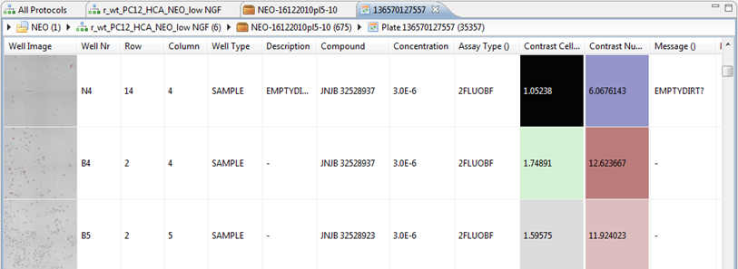

The Table View shows a lot of information, like a well image, well Nr, Row, Column, Well Type, etc. next to features columns.
Just like in the plate view, you can also accept or reject wells by right-clicking them. For more information, go to Validation and Approval.
You can execute the same context actions as in the Heatmap (see previous item).